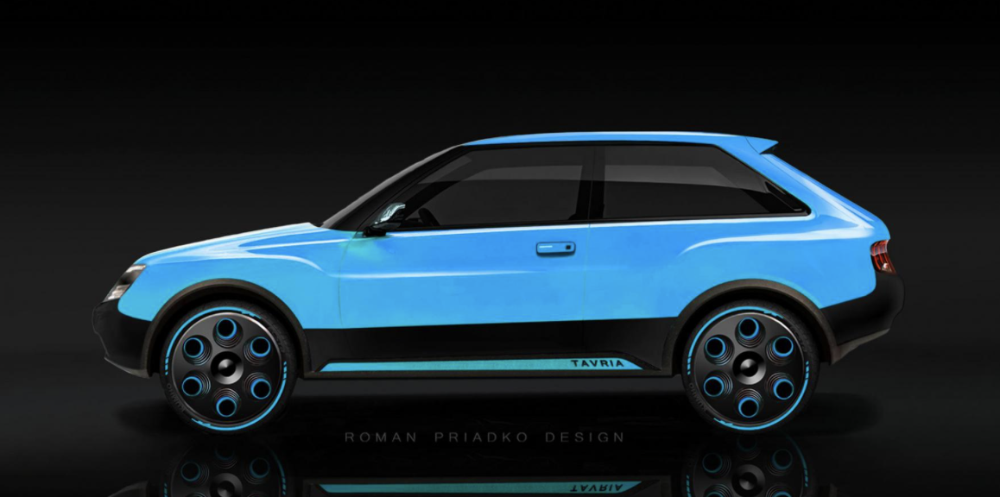

Виробництво автомобіля ЗАЗ-1102 "Таврія" завершилося ще в 2007 році, але ця модель досі залишається об'єктом уваги ентузіастів, які уявляють, як могла б виглядати "Таврія" в сучасному виконанні. Український дизайнер Роман Прядко створив оригінальний рендер "Таврії Нова 2022" і поділився ним на своїй сторінці в Facebook. Це не перший подібний проєкт Прядка, він часто розробляє дизайнерські концепти для міжнародних медіа. У своєму ескізі Прядко взяв за основу модель "Таврії" 1997 року, додавши їй сучасні риси, збільшені колісні диски та аеродинамічний кузов. Тридверний хетчбек отримав оновлений дизайн із чорними бамперами, похилим лобовим склом і виразними лініями на кузові.
Можливий вигляд ЗАЗ Тарвії


На думку дизайнера, нова "Таврія" залишиться тридверним хетчбеком, але з більш плавними, елегантними лініями в порівнянні з базовою моделлю. Задня частина електромобіля отримала дві світлодіодні смуги, розділені чорною декоративною вставкою з написом "Tavria". Назва моделі також розташована на дверних порогах. Задній бампер прикрашений чорною пластиковою вставкою, що додає стильності. Чорними виконані колісні арки, окантовка вікон, а також оригінальні колісні диски, які мають жовті акценти, що гармонують з кольором кузова.